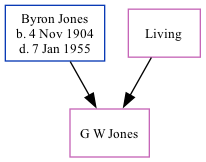

G W W Jones
[ Home ] | [ Calendar ] | [ Surnames Index ] | [ Family History ]The child of Byron Jones and Thelma JacobsonThey.
Parents
- Byron Moses was born on Nov 4, 1904
- Thelma Jane
Family Tree
Generated by ged2site. Last updated on Nov 13, 2024